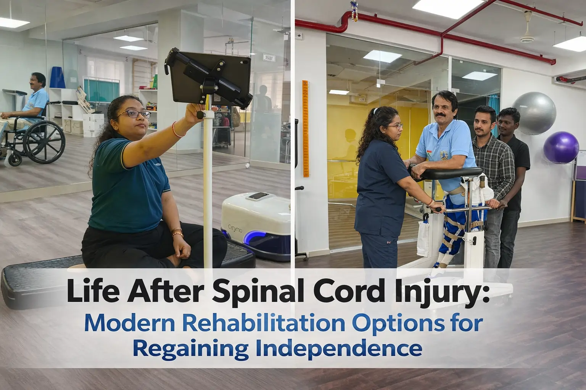

Life After Spinal Cord Injury: Modern Rehabilitation Options for Regaining Independence


13
JAN

Dr. Amol Kathar
MPT (Neuro), 3.5+ years clinical
experience in neurological rehabilitation
Six months ago, Ruth couldn't feel her legs. The car accident on Pune's outer ring road changed everything in seconds. Doctors told her family what they've told thousands before: "She may never walk again." Her husband sat by her hospital bed, watching her stare at the ceiling. He saw the fear in her eyes. Not fear of wheelchairs or hospitals. Fear of becoming a burden. Fear of losing herself.
Then something unexpected happened. During her third week at a neuro rehabilitation centre in Pune, a therapist walked into her room with what looked like a robotic suit. "Want to try standing today?" she asked. Ruth thought she was joking. But thirty minutes later, with motors whirring and sensors beeping, she stood upright for the first time since the accident. Her husband cried. Ruth smiled. That moment didn't cure her. But it gave her something more powerful than a cure. It gave her possibilities.
What is modern spinal cord injury rehabilitation? It combines cutting-edge technology with proven therapies to help patients regain function, independence, and quality of life after spinal cord damage, focusing on what's possible rather than what's lost.
This article shows you rehabilitation options most websites won't tell you about. We're talking real science, real costs, and real outcomes. No sugar-coating. No false promises. Just facts that can help you or your loved one make informed decisions.
Understanding Your Spinal Cord Injury: The Truth Nobody Tells You
Here's what shocked me when I started working in rehabilitation: Most spinal cord injuries aren't actually "complete." Even when doctors say you have a complete injury, microscopic nerve fibers often survive. Scientists discovered this only recently. Your spinal cord might have more potential than anyone realizes.
The Classification System Made Simple (ASIA scale)
Doctors use something called the ASIA scale. It runs from A to D:
- ASIA A (Complete): No sensation or movement below injury
- ASIA B (Incomplete): Some sensation, no movement
- ASIA C (Incomplete): Some movement, but muscles are weak
- ASIA D (Incomplete): Movement works, but not perfectly
Here's the surprising truth: Your classification can change. I've seen ASIA A patients move to ASIA B with intensive therapy. It doesn't happen to everyone. But it happens often enough that you should never give up during the first year.
Why the First Year Matters Most
Your brain and spinal cord are incredibly plastic. That's the medical term for "changeable." During the first 12 months after injury, your nervous system is desperately trying to rewire itself. This window of maximum neuroplasticity is your golden opportunity.
But here's what most people don't realize: Recovery doesn't stop at one year. That's an old myth. Recent studies from the best physiotherapy centre in Pune facilities show patients gaining function even 5-10 years after injury. The key? Intensive, technology-assisted therapy.
The Modern Rehabilitation Toolkit: Beyond Traditional Physical Therapy
Traditional physical therapy helps. Stretching, strengthening, and balance exercises matter. But they're just the foundation. Modern spine care and rehabilitation in Pune centers now offer technologies that didn't exist ten years ago. Let's talk about what actually works.
Robotic Exoskeleton Therapy: Walking With Machine Power
Remember Ruth standing for the first time? That was an exoskeleton. These wearable robots help you walk even when your legs can't move on their own.
How Exoskeletons Actually Work:
Think of it like a smart brace that does the heavy lifting. Sensors detect when you shift your weight. Motors move your legs through a natural walking pattern. You use crutches for balance. The machine handles the rest.
The Real Data on Exoskeletons:
A 2024 analysis of multiple studies found exoskeletons improve:
- Balance (significant improvement in 78% of patients)
- Muscle strength (measurable gains in leg muscles)
- Respiratory function (better breathing capacity)
- Spasticity reduction (less muscle stiffness)
But here's the honest part: Exoskeletons don't make you walk faster than regular therapy. They do something different. They let you stand upright. They strengthen bones. They improve heart health. They reduce pressure sores.
Who Can Use Them?
Most websites skip these crucial details:
- Injury level: C7 and below for clinical use
- Height: Between 5'3" and 6'2"
- Weight: Under 220 pounds
- Bone density: Must be adequate (no severe osteoporosis)
- Skin integrity: No open wounds or severe pressure sores
The Cost Reality:
- Clinical sessions: Usually covered by insurance
- Home device: ₹58 lakhs to ₹1.24 crores
- Some patients access through clinical trials
- Government schemes may provide support for eligible patients
Virtual Reality Therapy: Gaming Your Way to Recovery
This sounds like science fiction. It's not. VR therapy uses immersive gaming environments to retrain your brain and body.
What Makes VR Different:
Your brain responds to what it sees. When you see your virtual hand catching a ball, your real neurons fire. Even if your real hand can't move yet, your brain practices the movement. This repetition builds new neural pathways.
A major 2024 study analyzed 46 research papers covering 652 patients. The findings? Patients who completed 60+ hours of VR training showed significant improvements in:
- Upper limb function
- Balance control
- Pain management
- Muscle coordination
The VR + Brain Interface Revolution:
Some advanced centers now combine VR with brain-computer interfaces. You think about moving. The computer reads your brain signals. Your avatar moves. This teaches your brain the correct patterns. Eventually, some patients regain actual movement.
VR for Chronic Pain:
Here's something most websites ignore: VR offers immediate pain relief for neuropathic pain. The immersive experience opposes the maladaptive plasticity that causes chronic pain. Patients report 30-50% pain reduction during and after VR sessions.
Functional Electrical Stimulation: Making Muscles Move Again
FES uses small electrical pulses to make your muscles contract. It's not painful. It feels like a gentle tingle.
Two Types of FES:
| Surface FES | Implanted FES |
|---|---|
| Electrode pads on skin | Electrodes surgically placed |
| Non-invasive | Requires surgery |
| Can start immediately | Long-term solution |
| Needs higher intensity | Lower, more precise stimulation |
| Good for trying it out | Best for committed users |
The Results Are Impressive:
Research from leading spine care rehab in Pune centers shows FES cycling produces:
- 103% increase in peak oxygen uptake after one year
- 113% increase in power output
- Improved cardiovascular health
- Better insulin sensitivity
- Reduced fat mass, increased muscle mass
FES-Assisted Walking:
Some patients can walk with FES. Not independently. But with a walker or canes. The system stimulates multiple muscles in sequence:
- Quadriceps and calf muscles for standing
- Hamstrings and shin muscles for swinging the leg forward
- Coordinated through foot switches
Is it practical for daily life? For some people, yes. For others, it's therapy that builds strength and maintains muscle health.
Stem Cell Therapy: The Future Happening Now
Let me be clear: Stem cells aren't a cure. Not yet. But they're no longer science fiction either.
What's Actually Working in 2024-2025:
A University of California San Diego study followed 4 patients for 5 years after neural stem cell injections. Two showed durable neurological improvements. Their ASIA scores improved. EMG tests showed increased muscle activity.
Another trial called CELLTOP used mesenchymal stem cells from fat tissue. Results? 7 out of 10 patients improved their injury classification. Zero serious side effects.
A 2025 network analysis of 18 randomized trials found umbilical cord mesenchymal stem cells worked best. The optimal delivery method? Intrathecal injection (into the spinal fluid).
The Realistic Expectations:
- Phase I/II trials show safety and promise
- Not FDA-approved as standard treatment yet
- Works best when combined with intensive rehab
- Best results in injuries less than 12 months old
- Access through clinical trials or research centers
How to Access Stem Cell Trials:
Search ClinicalTrials.gov for "spinal cord injury stem cells." Major medical centers in the US and India are recruiting. Eligibility varies. Many require:
- Specific injury level
- Time since injury (usually under 2 years)
- Stable medical condition
- Willingness to participate in follow-up
The Power of Combination Therapy: Why More Is More
Here's what separates good outcomes from great outcomes: combining therapies.
Think about it. FES makes your muscles contract. But muscles fatigue quickly. Add an exoskeleton? Now the robot provides power when your muscles tire. You can train 3x longer.
Or consider VR plus traditional physical therapy. The VR teaches your brain the movement patterns. Traditional PT strengthens the muscles. Together, they produce better results than either alone.
A best neuro rehabilitation centre in Pune study found patients who used 3+ therapy types simultaneously showed:
- Faster functional improvements
- Better long-term outcomes
- Higher satisfaction scores
- Reduced depression and anxiety
The Intensity Factor:
Quality rehabilitation requires intensity. Studies consistently show 3-5 hours daily produces the best results. That's hard. It's exhausting. But neuroplasticity requires repetition. Lots of it.
One therapy session per week won't cut it. Your nervous system needs consistent, frequent stimulation to rewire.
Beyond Physical Recovery: The Whole-Person Approach
Your spinal cord injury affected your body. But it impacted your entire life. Modern rehabilitation addresses everything.
Mental Health Integration
Depression affects 25-40% of spinal cord injury patients. That's not weakness. It's a normal response to massive life changes. The best rehabilitation programs include:
- Licensed psychologists
- Peer support groups
- Medication when needed
- Cognitive behavioral therapy
- Family counseling
Redefining Independence
Independence doesn't mean doing everything alone. It means making your own choices. Controlling your own life. Asking for help when you need it. That's not dependence. That's wisdom.
Many patients tell me they feel guilty asking for help. I always say this: Everyone needs help sometimes. Able-bodied people just need it for different things.
Community and Connection
Isolation kills recovery. Humans are social creatures. Spinal cord injury often forces social withdrawal. Rehabilitation should force social connection.
Look for programs offering:
- Adaptive sports (wheelchair basketball, hand cycling, adaptive yoga)
- Vocational rehabilitation
- Peer mentoring
- Group therapy sessions
- Community reintegration programs
Navigating Costs and Insurance: The Honest Conversation
Let's talk about money. Nobody wants to. But you need to know.
Average Rehabilitation Costs in India:
Government Hospitals:
- First year after injury: ₹2 lakhs to ₹8 lakhs (subsidized)
- Each year after: ₹1 lakh to ₹3 lakhs
- Inpatient rehabilitation: ₹30,000 to ₹1.5 lakhs per month
- Outpatient therapy: ₹500 to ₹1,500 per session
Private Hospitals (Pune):
- First year after injury: ₹10 lakhs to ₹25 lakhs (depending on injury level)
- Each year after: ₹3 lakhs to ₹10 lakhs
- Inpatient rehabilitation: ₹1.5 lakhs to ₹5 lakhs per month
- Outpatient therapy: ₹1,000 to ₹3,000 per session
Advanced Technology Costs:
- Robotic exoskeleton therapy (clinical): ₹2,000 to ₹5,000 per session
- VR therapy sessions: ₹1,500 to ₹3,000 per session
- FES therapy: ₹1,000 to ₹2,500 per session
- Home exoskeleton device (if purchasing): ₹40 lakhs to ₹80 lakhs
What Insurance Typically Covers:
- Initial hospitalization and surgery
- Inpatient rehabilitation (with limits)
- Outpatient therapy (with visit caps)
- Durable medical equipment (wheelchairs, walkers)
- Some assistive technology
What Insurance Often Denies:
- Home exoskeleton devices
- Extended inpatient stays beyond "medical necessity"
- Alternative therapies
- Clinical trial participation costs
- Home modifications
Fighting Denials:
Don't accept the first "no." Appeal. Get your doctor to write detailed letters explaining medical necessity. Document everything. Persistence works. I've seen patients win appeals after 3-4 tries.
Secondary Complications: Prevention Is Everything
Spinal cord injury creates ripple effects. Managing these matters as much as regaining function.
The Big Four Complications:
- Pressure Sores: Can develop in hours. Can take months to heal. Prevention through position changes, special cushions, and daily skin checks is non-negotiable.
- Urinary Tract Infections: Leading cause of hospitalization after SCI. Proper catheter care and hydration reduce risk.
- Autonomic Dysreflexia: Medical emergency in injuries above T6. Learn the signs. Know the treatment.
- Cardiovascular Deconditioning: Your heart weakens without activity. This is why standing therapy, FES cycling, and regular exercise matter so much.
Finding the Right Rehabilitation Center: Questions to Ask
Not all rehabilitation centers offer the same quality. Here's how to evaluate:
Essential Questions:
- Do you have CARF accreditation?
- What's your staff-to-patient ratio?
- How many hours of therapy daily?
- What technology do you offer (exoskeletons, VR, FES)?
- Can I see your outcomes data?
- Do you offer family training?
- What's your discharge planning process?
- Do you provide continued outpatient support?
Red Flags:
- Vague answers about therapy hours
- No family involvement
- Limited therapy options
- Poor communication
- No technology-assisted therapies
- Pushy sales tactics
At Apricot Care Assisted Living and Rehabilitation, we believe transparency matters. We show you our equipment. We explain our protocols. We give you realistic expectations. Because informed patients make better decisions.
Life After Discharge: The Long Game
Rehabilitation doesn't end when you leave the facility. It's a lifelong process.
Continuing Therapy Options:
- Outpatient clinic visits (2-3x weekly)
- Home health services
- Tele-rehabilitation via video
- Community fitness programs
- Adaptive recreation
- Self-directed exercise
The Maintenance Mindset:
Think of rehabilitation like brushing your teeth. You don't brush once and call it done. You maintain it daily. Same with SCI rehabilitation. Regular exercise. Consistent stretching. Ongoing strength training.
Patients who maintain therapy long-term do better. They have fewer complications. Better function. Higher quality of life.
Real Stories: What Success Actually Looks Like
Success isn't always walking. Sometimes it's:
- Feeding yourself independently
- Transferring without assistance
- Driving an adapted vehicle
- Returning to work
- Living alone
- Starting a family
Rohan's Story:
Complete T6 injury from a construction fall. After 8 months of intensive rehabilitation including robotic training and FES, he returned to work as an architect. He uses a wheelchair. But he lives independently. He travels. He's engaged to be married.
He told me: "I thought my life ended. It didn't. It changed. But it's still worth living."
Meera's Story:
Incomplete C6 injury from a car accident. She regained some hand function through intensive occupational therapy and VR training. She can feed herself now. Brush her teeth. Type on a computer. Small things that mean everything.
What Most Clinics Won't Tell You: The Uncomfortable Truths
1. Not Everyone Gets Better
Some patients plateau early. Some never regain significant function. Rehabilitation helps everyone improve quality of life. But it doesn't produce miracles for everyone.
2. The Mental Battle Is Harder Than the Physical One
Your muscles hurt during therapy. But the psychological pain of accepting your new reality? That's the real challenge. Many patients need years to fully adjust.
3. Financial Stress Is Real
Insurance runs out. Savings deplete. Many families face bankruptcy. This doesn't mean rehabilitation isn't worth it. But it means you need to plan carefully.
4. Relationships Change
Some marriages strengthen. Others don't survive. Friendships shift. Family dynamics evolve. That's normal. It's also painful.
5. The Healthcare System Will Frustrate You
Insurance denials. Medical errors. Communication breakdowns. It happens. Advocacy matters. Persistence matters. Having a care coordinator helps enormously.
Taking Action: Your Next Steps
If you're newly injured:
- Get to a specialized SCI center immediately
- Start intensive rehabilitation within weeks, not months
- Set realistic goals with your team
- Involve family in therapy sessions
- Ask about technology-assisted options
If you're in the chronic phase (1+ years post-injury):
- Request a reassessment of your therapy
- Ask about new technologies (exoskeletons, VR, FES)
- Consider joining a clinical trial
- Don't accept "this is as good as it gets"
- Find a peer support group
For caregivers and family:
- Take care of yourself (burnout helps nobody)
- Attend family training sessions
- Learn proper transfer techniques
- Join a caregiver support group
- Plan for long-term sustainability
The Bottom Line: Hope Meets Science
Modern spinal cord injury rehabilitation combines hope and science. Hope alone doesn't heal. But science without hope doesn't motivate. You need both.
Robotic exoskeletons, virtual reality, electrical stimulation, and stem cells aren't magic. They're tools. Powerful tools. When combined with intensive therapy, psychological support, and personal determination, they produce outcomes that seemed impossible a decade ago.
Will you walk again? Maybe. Maybe not. But will you regain independence, purpose, and quality of life? Absolutely yes, if you commit to comprehensive rehabilitation.
At Apricot Care Assisted Living and Rehabilitation, we've watched thousands of patients exceed their own expectations. Not because we're miracle workers. But because we offer the right combination of technology, expertise, and personalized care.
Your injury changed your path. It didn't erase your destination. Independence, dignity, and a meaningful life are still yours to claim.
Final Thought
What's the one thing you can do today to move forward in your recovery journey?
Whether you're researching for yourself or a loved one, whether you're weeks or years post-injury, the next step matters. Maybe it's scheduling an assessment. Maybe it's asking your doctor about new therapies. Maybe it's just deciding not to give up.
That step you take today? It might be the one that changes everything.
About
author
Dr. Amol Kathar is the Clinical Head and Neurophysiotherapist at Apricot Care,
Pune.
With 3.5 years of experience, he specializes in personalized rehabilitation for stroke, spinal cord injuries, and mobility training to help patients regain independence.
With 3.5 years of experience, he specializes in personalized rehabilitation for stroke, spinal cord injuries, and mobility training to help patients regain independence.